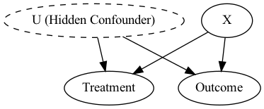

Introduction to Uplift Modeling#
1. A Very Short Introduction to Causal Inference#
Causal inference is about understanding cause-and-effect relationships, moving beyond simple correlations to determine how an intervention or treatment directly influences an outcome.
One way to measure the effect of a treatment is via Randomized Control Trials (RCTs) or A/B testing. RCT is method to establish causality by ensuring any differences between groups are due to the intervention and not other factors. To this end, we employ a random assignment to a control and treatment group that helps to balance both observed and unobserved characteristics between the groups, reducing bias.
Below is an example of two versions of an email survey design used in an A/B testing experiment. The image shows two different designs of the same email sent to different groups to evaluate which version performs better in terms of user interaction.
In a randomized controlled trial (RCT), the potential outcomes framework is used to assess the effect of a treatment.
Each individual has two potential outcomes:
Y(1) : The outcome if they receive the treatment.
Y(0) : The outcome if they do not receive the treatment.
The causal effect for an individual is the difference between these two outcomes: Y(1) - Y(0) .
However, as depicted in the table below, the fundamental problem of causal inference arises because:
We can only observe one of the two potential outcomes for each individual (either Y(1) or Y(0) ).
The unobserved outcome (the counterfactual) remains unknown
Y(1) |
Y(0) |
Y(1) - Y(0) |
|
|---|---|---|---|
👨💼 Alice |
1 |
? |
? |
👩💼 Bob |
0 |
? |
? |
👨⚕️ Mike |
? |
0 |
? |
👩💼 Taylor |
? |
1 |
? |
Thus, we can use RCTs to compute the average treatment effect (ATE), which measures the overall impact of the treatment across the entire population. It gives us a single number summarizing the effect. $\(ATE = \mathbb{E}[Y(1)] - \mathbb{E}[Y(0)] \)$
2. Why Uplift Modeling?#
In many real-world scenarios, it is not enough to know whether a treatment works in general; we need to understand for whom the treatment works best. Uplift modeling helps answer this question by predicting the change in behavior caused by a treatment on an individual level.
For example:
Marketing 📈: Sending out promotions can be costly. Uplift modeling allows you to target customers who are likely to respond positively only because of the promotion. Instead of wasting resources on customers who would purchase anyway, you focus on those who need the extra nudge.
Healthcare 💉: In medicine, not every treatment works equally well for every patient. Uplift modeling helps doctors identify which patients are most likely to benefit from a specific treatment.
Personalization 🎯: Uplift modeling enables businesses to tailor treatments or policies to individuals who would experience the most significant impact.
Traditional Models vs. Uplift Models#
Traditional predictive models estimate outcomes without considering the effect of a treatment. For example, a traditional model might predict whether a customer will make a purchase, but it doesn’t tell us whether offering a discount will change the customer’s decision. Uplift models, on the other hand, focus on predicting the change in behavior specifically due to the treatment.
This shift in perspective makes uplift modeling especially powerful for personalized decision-making.
3. Conditional Average Treatment Effect (CATE)#
CATE is the core concept behind uplift modeling. It measures the difference in expected outcomes between treated and untreated individuals, conditional on their features. CATE helps us understand how different groups of people respond differently to the same treatment.
Mathematically: \(CATE(x) = \mathbb{E}[Y(1) - Y(0) | X = x]\)
Where:
Y(1): The outcome if treated.
Y(0): The outcome if untreated.
X: The features of the individual.
Conditional Average Treatment Effect (CATE): Focuses on the impact of the treatment for specific individuals or subgroups. It allows for heterogeneity in treatment effects. $\( CATE(x) = \mathbb{E}[Y(1) - Y(0) | X = x] \)$
Real-World Examples:#
In a marketing campaign, ATE might tell us that offering a 10% discount increases sales by 5% overall. However, CATE can reveal that for high-income customers, the discount has no impact, while for low-income customers, it boosts sales by 15%.
In healthcare, ATE might suggest that a new drug is beneficial on average, but CATE can uncover that it is only effective for patients with a specific genetic marker.
4. Importance of Randomized Data and Propensity Scores#
In many real-world scenarios, achieving perfect randomization is difficult. This is where propensity scores become crucial. The propensity score is the probability of receiving the treatment given a set of observed features. In uplift modeling, propensity scores help adjust for biases and imbalances in the data, allowing us to estimate treatment effects more accurately even when the data isn’t perfectly randomized.
Estimating ATE and CATE with Randomized Data#
In a randomized setting:
ATE can be estimated by simply taking the difference in average outcomes between the treated and untreated groups.
CATE allows us to estimate treatment effects for specific subgroups or individuals, providing more targeted insights.
5. Assumptions in Causal Inference: Why They Matter#
Uplift modeling, like other causal inference methods, relies on several critical assumptions to produce reliable estimates. If these assumptions are violated, our estimates can become biased or misleading.
The Four Key Assumptions:#
Ignorability (No Unmeasured Confounders): We assume that all factors influencing both treatment assignment and the outcome have been observed. If important confounders are missing, our estimates will be biased.
Positivity (Overlap): For every individual, there must be a non-zero probability of receiving either the treatment or the control. Without this overlap, it becomes impossible to accurately estimate the treatment effect for some groups.
Consistency: The treatment received must align with the intended treatment, and its effect should be consistent across contexts.
Interference: The potential outcomes for one unit may be influenced by the treatment or exposure assigned to other units, thus violating the standard assumption of no interference between units (also known as the Stable Unit Treatment Value Assumption, or SUTVA).
Real-World Challenges:#
Selection Bias: In marketing, customers who are more engaged might be more likely to receive promotions, leading to biased treatment assignment.
Lack of Overlap: In healthcare, some treatments might only be prescribed to high-risk patients, making it difficult to estimate the effect for lower-risk patients.
Ignorability Assumption:#
There can be some features that we do not observe (we do not have them in our dataset or have no posibility of measuring) that can influence the treatment or the outcome. Under this situation, we have no guarantees that the outcome or the treatment changed for a reason without our knowledge.

Positivity assumption#
This is a larger problem when:
No randomized data - there can be more subgroups associated to a treatment than the control (for example).
Multiple treatments - the more treatments there are, the higher the chance that there is no overlap for certain segments in at least one treatment.
Curse of dimensionality - the more possible subgroups exist (combination of all possible covariate values) the more chance there is that one subgroup will not have data points in each treatment.